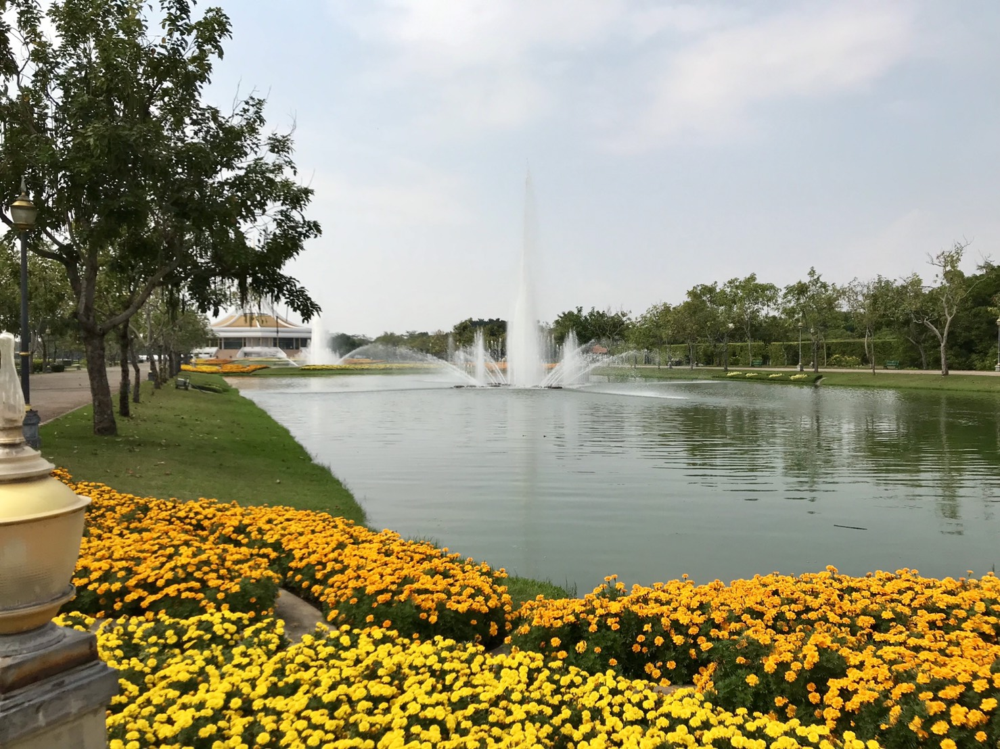
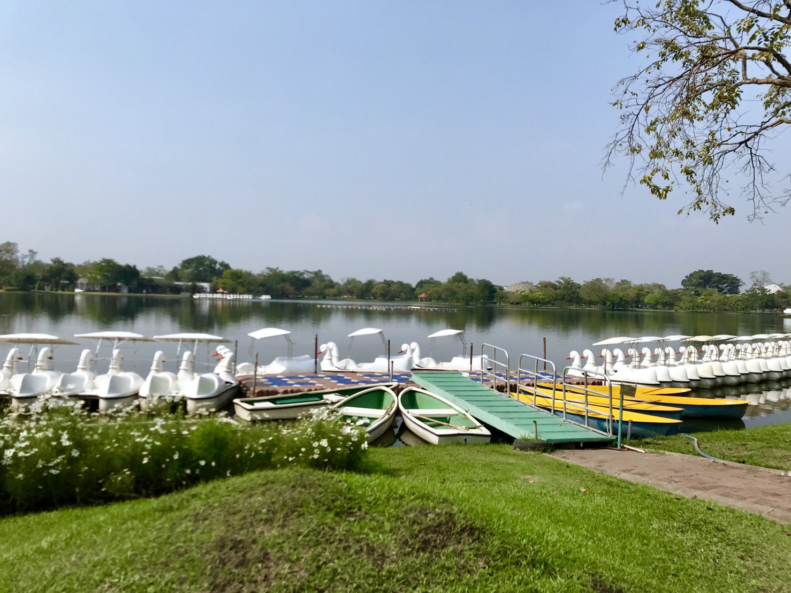

|
|
|
|
|


 |
 |
 |
 |
สวนหลวงร.9 ตั้งอยู่ที่แขวงหนองบอน เขตประเวศ กรุงเทพมหานคร บนเนื้อที่ประมาณ 500 ไร่ มีซอยอุดมสุขผ่านด้านหน้าสวนและถนนศรีนครรินทร์ผ่านด้านหลังสวน โดยที่เมื่อปีพุทธศักราช 2503 ขณะนั้นนายชำนาญ ยุวบูรณ์ ดำรง ตำแหน่งนายกเทศมนตรีกรุงเทพมหานคร ได้จัดซื้อที่ดินบริเวณแขวงหนองบอน เขตพระโขนงไว้จำนวนหนึ่งเพื่อใช้เป็นที่สร้างสวนสาธารณะ ต่อมาในพุทธศักราช 2520 เมื่อนายชลอ ธรรมศิริ ได้ดำรงตำแหน่งผู้ว่าราชการกรุงเทพมหานคร ได้มีดำริ ที่จะจัดให้ที่ดินแปลงนี้เป็นที่พักผ่อนและสนามกีฬาของประชาชน
ในปีพุทธศักราช 2523 ได้เกิดน้ำท่วมกรุงเทพมหานครครั้งใหญ่ พระบาท สมเด็จพระเจ้าอยู่หัวได้เสด็จพระราชดำเนินทอดพระเนตรน้ำท่วมทั่วไปและทรง พระราชทานพระราชดำริว่าบริเวณหนองบอน วัดตากล่ำ และวัดดอกไม้นี้ ควรจะ ได้ปรับปรุงใช้เป็นที่รองรับน้ำตอนใต้ของเมืองได้ดี สมควรปรับปรุงให้มีระบบ ระบายน้ำให้มีความต่อเนื่อง เพื่อถ่ายเทลงสู่แม่น้ำเจ้าพระยา
|  |
|---|
ในปีพุทธศักราช 2535 คณะเอกชน โดยมีท่านผู้หญิงมณีรัตน์ บุนนาค และ น.ต.กำธน สันธวานนท์ เป็นผู้นำ ได้มีความคิดที่จะสร้างสวนน้อมเกล้า ฯ ถวาย พระบาทสมเด็จพระเจ้าอยู่หัวและในปีต่อมาก็ได้คิดกันว่าควรจะสร้างสวนพฤกษศาสตร์ สมบูรณ์แบบแห่งแรก ได้มีบุคคลผู้มีความรู้ความชำนาญในการสร้างสวนเข้าร่วม ให้ความคิดเห็น เช่น คุณหญิงอุไร ลืออำรุง นายสิทธิภรณ์ โทณวนิก และ น.ต.ภากร ศุภชลาศัย ร.น. และได้มีการพิจารณาถึงเรื่องที่ดินหลายแห่ง เช่น ที่เขาชีโอน พัทยา อ่างเก็บน้ำบางพระ ที่ดินชานเมืองแถวสนามบิน ที่ใน จังหวัดนนทบุรี ปทุมธานี และที่ดินของเอกชนแปลงหนึ่งเนื้อที่ 589 ซึ่งตั้งอยู่ห่าง จากถนนประชาชื่น กับถนนทหารอากาศ ซึ่งในขณะเดียวกันทางกรุงเทพมหานคร ขณะนั้นมีพลเรือเอกเทียม มกรานนท์ เป็นผู้ว่าราชการกรุงเทพมหานคร ได้ประชุม คณะกรรมการบริหารกรุงเทพมหานคร และมีมติให้ปรับปรุงพื้นที่ที่มีอยู่ให้เป็นสวน สาธารณะ และเมื่อได้ทราบว่าทางฝ่ายเอกชนจะจัดสร้างสวนเพื่อน้อมเกล้า ฯ ถวายพระบาทสมเด็จพระเจ้าอยู่หัว ทั้งสองฝ่ายคือฝ่ายเอกชนและฝ่ายกรุงเทพ มหานคร จึงได้มีการประชุมร่วมกัน เมื่อวันที่ 9 กรกฎาคม 2537 ตกลงที่จะใช้ ผืนดินของกรุงเทพมหานคร และในวันที่ 8 กุมภาพันธ์ 2528 ได้พิจารณาจัดตั้ง มูลนิธิและขอพระราชทานใช้ชื่อสวนสาธารณะแห่งนี้ว่า สวนหลวง ร.9 ซึ่งก็ได้รับ พระราชทานพระราชานุญาต และจัดตั้งเป็นมูลนิธิสวนหลวง ร.9 เมื่อวันที่ 19 พฤศจิกายน 2528 โดยมีวัตถุประสงค์ ดังนี้
|  |
|---|
1. สร้างสวนสาธารณะ เพื่อน้อมเกล้า ฯ ถวายพระบาทสมเด็จพระเจ้า อยู่หัว เนื่องในมหามงคลสมัยเฉลิมพระชนมพรรษาครบรอบ 50 ปี ในปีพุทธศักราช 2530
2. เป็นที่พักผ่อนหย่อนใจของประชาชนทั่วไป
3. เป็นศูนย์กลางรวบรวมสะสมและอนุรักษ์พืชพันธ์ไม้ ทั้งในประเทศและ ต่างประเทศให้เป็นสวนพฤกษศาสตร์ที่สมบูรณ์แบบแห่งแรกของประเทศไทย
4. ส่งเสริมวิชาการด้านการศึกษา ค้นคว้า วิจัย และเผยแพร่ความรู้ ด้านพฤกษศาสตร์แก่นักเรียน นักศึกษา และประชาชนทั่วไป
5. ปลูกฝั่งทัศนคติในการอนุรักษ์ธรรมชาติแก่เยาวชนและประชาชนทั่วไป
6. ประกอบกิจการสาธารณประโยชน์และการกุศลต่าง ๆ รวมทั้งทำนุบำรุง ส่งเสริม และพัฒนาสวนสาธารณะ
7. ร่วมมือกับองค์การกุศล และหน่วยงานทางราชการในกิจการต่าง ๆ
8. ไม่ดำเนินการเกี่ยวกับการเมือง
การดำเนินการก่อสร้างสวนหลวง ร.9 เสร็จทันที่จะน้อมเกล้าฯ ถวาย เป็นพระราชสักการะเฉลิมพระเกียรติ เนื่องในมหามงคลสมัยเฉลิมพระชนมพรรษา 5 ครบ วันที่ 5 ธันวาคม 2530